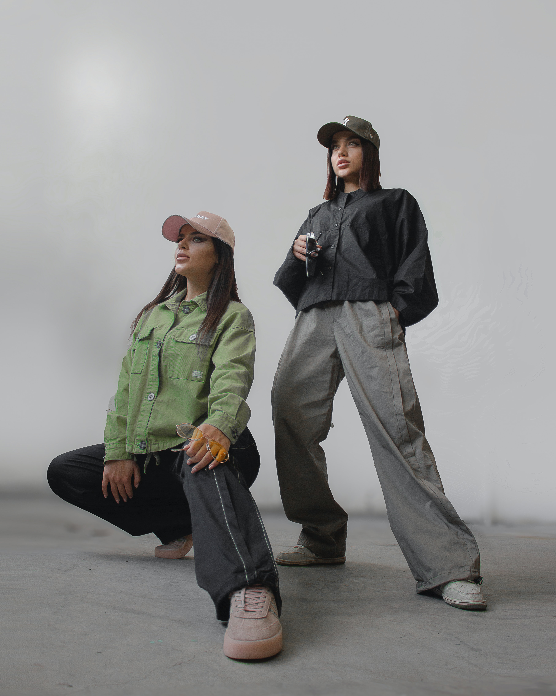

Clothes
H
- Casual
- Steet
- Minimalism

근 2~3년사이에 1960년대에 처음 나타났으며 예술적인 기교등을 제거하고
오로지 사물본질만을 추구하여
현실과의 괴리감을 줄이는 리얼리티적인 경향이다.
한국에 패션뿐만이아닌 인테리어,가구,건축 등등 전반적으로 지대한 영향을
미치고 있는 미니멀리즘은 단순함과 간결함이 강조된다.
이는 처음에는 포멀한 수트,니트,코트 등에 나타났으며 현재는 스트릿,캐주얼 전반에도 영향을
끼치는 중이다
패드와같은 일시적인 현상이 아니라 클래식,트렌드와같은 유행이 될거라 생각된다.
이중에서 성격자체가 거추장스러운거보단 깔끔한게좋고
불필요한 기교등을 좋아하지않아 미니멀리즘적인것에 호감이간다